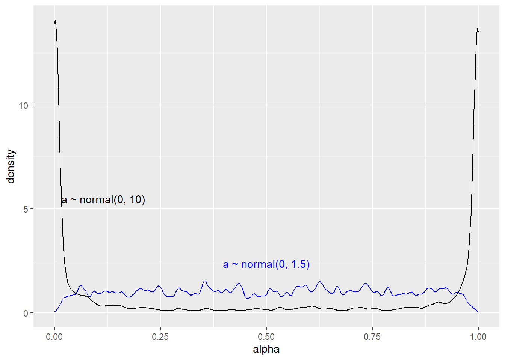

library(cmdstanr)
library(tidyverse)
library(rethinking)
# Load data
data(chimpanzees); d <- chimpanzees
d$treatment <- 1 + d$prosoc_left + 2 * d$condition8 Chapter 11: God Spiked the Integers
8.1 Model 11.4, priors as data variables and log-likelihood
First, let’s load the data and prepare the treatment variable.
We may want to test different priors for a specific model. In most simple models, this can be done outside of Stan. Still, sometimes priors can interact in ways that are not easily specified outside the Stan program. In such cases, we could supply the components of priors we would like to adjust to the model as data. This way, we won’t need to recompile the model every time we want to test a new prior. To test this idea, a modified version of model 11.4 is constructed as follows.
\[ \begin{align} L_i &\sim \operatorname{Bernoulli}(p_i) \\ \operatorname{logit}(p_i) &= \alpha_{\text{ACTOR}[i]} + \beta_{\text{TREATMENT}[i]} \\ \alpha_j &\sim \operatorname{Normal}(0, \sigma_\text{A}) \\ \alpha_k &\sim \operatorname{Normal}(0, \sigma_\text{B}) \\ \end{align} \]
Variable priors are defined as \(\sigma_{\text{A}}\) and \(\sigma_{\text{B}}\), we will supply values for these as data.
In the book, McElreath (McElreath 2020, 330) also includes the log-probability calculation needed for model comparisons using WAIC or PSIS. Adding observation-wise log-probability calculations in ulam is done by specifying log_lik = TRUE. In Stan, we need to set up this calculation in the generated quantities block.
Stan provides functions to compute the log-likelihood of an observation given estimated parameters, using available likelihood functions. For the Bernoulli likelihood used in our Stan program, we can use the bernoulli_logit_lpmf function. This function allows us to skip the inv_logit call 1 used in McElreath’s program (McElreath 2020, 335).
The full Stan program looks like this:
/* Model 11.4 */
data {
// Priors to be included as data
real a_sd;
real b_sd;
// Number of observations/actors/treat
int<lower=0> N;
int<lower=0> N_actor;
int<lower=0> N_treat;
// Index variables
array[N] int<lower=1, upper=N_actor> actor;
array[N] int<lower=1, upper=N_treat> treatment;
// Outcome
array[N] int<lower=0, upper=1> pulled_left;
// Prior only flag
int<lower=0, upper=1> prior_only;
}
parameters {
vector[N_actor] a;
vector[N_treat] b;
}
model {
vector[N] p;
a ~ normal(0, a_sd);
b ~ normal(0, b_sd);
for(n in 1:N) {
p[n] = a[actor[n]] + b[treatment[n]];
}
if (prior_only == 0) {
pulled_left ~ bernoulli_logit(p);
}
}
generated quantities {
vector[N] log_lik;
vector[N] p;
for(n in 1:N) {
p[n] = a[actor[n]] + b[treatment[n]];
// Log lik
log_lik[n] = bernoulli_logit_lpmf(pulled_left[n] | p[n]);
}
}Next we will sample from the model, first with the very wide prior and then changing to the more reasonable normal(0, 1.5) (McElreath 2020, 328).
Code
dl <- list(
a_sd = 10,
b_sd = 10,
N = nrow(d),
N_actor = length(unique(d$actor)),
N_treat = length(unique(d$treatment)),
actor = d$actor,
treatment = d$treatment,
pulled_left = d$pulled_left,
prior_only = 1
)
# Compiling the model
m11.4 <- cmdstan_model(stan_file = "models/m11-4.stan",
exe_file = "models/m11-4.exe")
prior_1_m11.4 <- m11.4$sample(
data = dl, # The list of variables
iter_sampling = 2000, # Number of iterations for sampling
iter_warmup = 1000, # Number of warm-up iterations
chains = 1, # Number of Markov chains
refresh = 1000 # Number of iterations before each print
)Running MCMC with 1 chain...
Chain 1 Iteration: 1 / 3000 [ 0%] (Warmup)
Chain 1 Iteration: 1000 / 3000 [ 33%] (Warmup)
Chain 1 Iteration: 1001 / 3000 [ 33%] (Sampling)
Chain 1 Iteration: 2000 / 3000 [ 66%] (Sampling)
Chain 1 Iteration: 3000 / 3000 [100%] (Sampling)
Chain 1 finished in 1.6 seconds.Code
dl$a_sd <- 1.5
prior_2_m11.4 <- m11.4$sample(
data = dl, # The list of variables
iter_sampling = 2000, # Number of iterations for sampling
iter_warmup = 1000, # Number of warm-up iterations
chains = 1, # Number of Markov chains
refresh = 1000 # Number of iterations before each print
)Running MCMC with 1 chain...
Chain 1 Iteration: 1 / 3000 [ 0%] (Warmup)
Chain 1 Iteration: 1000 / 3000 [ 33%] (Warmup)
Chain 1 Iteration: 1001 / 3000 [ 33%] (Sampling)
Chain 1 Iteration: 2000 / 3000 [ 66%] (Sampling)
Chain 1 Iteration: 3000 / 3000 [100%] (Sampling)
Chain 1 finished in 1.6 seconds.Code
draws.p1 <- prior_1_m11.4$draws(format = "df")
draws.p2 <- prior_2_m11.4$draws(format = "df")
dr2 <- draws.p2 |>
select(.iteration, alpha2 = 'a[1]') |>
mutate(alpha2 = plogis(alpha2))
draws.p1 |>
select(.iteration, alpha = 'a[1]') |>
mutate(alpha = plogis(alpha)) |>
ggplot(aes(alpha)) +
geom_density(adjust = 0.1) +
geom_density(data = dr2,
aes(alpha2),
color = "blue",
adjust = 0.1) +
annotate("text",
x = I(0.5),
y = I(0.2),
label = "a ~ normal(0, 1.5)",
color = "blue") +
annotate("text",
x = I(0.15),
y = I(0.4),
label = "a ~ normal(0, 10)",
color = "black")
To compare models using the log_lik we can use the loo package. Let’s fit model 11.5 first, and the compare to model 11.4 with the suggested priors.
Model 11.5 uses a slightly different setup, we need another set of index variables.
Code
dl$side <- d$prosoc_left + 1
dl$cond <- d$condition + 1
dl$prior_only <- 0
# Adding n levels on side and cond
dl$N_cond <- length(unique(dl$cond))
dl$N_side <- length(unique(dl$side))
# Set the priors
dl$a_sd <- 1.5
dl$b_sd <- 0.5
m11.5 <- cmdstan_model(stan_file = "models/m11-5.stan",
exe_file = "models/m11-5.exe")
fit11.4 <- m11.4$sample(
data = dl, # The list of variables
iter_sampling = 2000, # Number of iterations for sampling
iter_warmup = 1000, # Number of warm-up iterations
chains = 1, # Number of Markov chains
refresh = 1000 # Number of iterations before each print
)Running MCMC with 1 chain...
Chain 1 Iteration: 1 / 3000 [ 0%] (Warmup)
Chain 1 Iteration: 1000 / 3000 [ 33%] (Warmup)
Chain 1 Iteration: 1001 / 3000 [ 33%] (Sampling)
Chain 1 Iteration: 2000 / 3000 [ 66%] (Sampling)
Chain 1 Iteration: 3000 / 3000 [100%] (Sampling)
Chain 1 finished in 2.3 seconds.Code
fit11.5 <- m11.5$sample(
data = dl, # The list of variables
iter_sampling = 2000, # Number of iterations for sampling
iter_warmup = 1000, # Number of warm-up iterations
chains = 1, # Number of Markov chains
refresh = 1000 # Number of iterations before each print
)Running MCMC with 1 chain...
Chain 1 Iteration: 1 / 3000 [ 0%] (Warmup)
Chain 1 Iteration: 1000 / 3000 [ 33%] (Warmup)
Chain 1 Iteration: 1001 / 3000 [ 33%] (Sampling)
Chain 1 Iteration: 2000 / 3000 [ 66%] (Sampling)
Chain 1 Iteration: 3000 / 3000 [100%] (Sampling)
Chain 1 finished in 3.0 seconds.library(loo)
llm11.4 <- fit11.4$draws("log_lik", format = "matrix")
llm11.5 <- fit11.5$draws("log_lik", format = "matrix")
waic(llm11.4)
Computed from 2000 by 504 log-likelihood matrix.
Estimate SE
elpd_waic -265.9 9.5
p_waic 8.3 0.4
waic 531.9 18.9waic(llm11.5)
Computed from 2000 by 504 log-likelihood matrix.
Estimate SE
elpd_waic -265.3 9.5
p_waic 7.6 0.4
waic 530.7 19.1loo::loo_compare(waic(llm11.4), waic(llm11.5)) elpd_diff se_diff
model2 0.0 0.0
model1 -0.6 0.6 8.2 References
McElreath, Richard. 2020. Statistical Rethinking: A Bayesian Course with Examples in R and Stan. Second edition. Chapman & Hall/CRC Texts in Statistical Science Series. Boca Raton: CRC Press.
See the Stan manual for the Bernoulli parameterization, and here for an overview of probability functions.↩︎